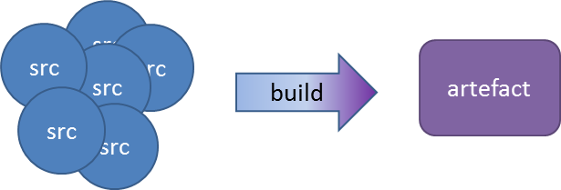
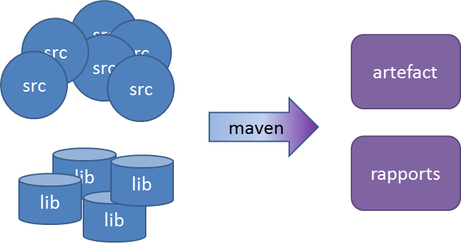
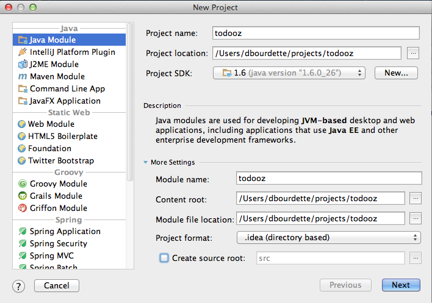
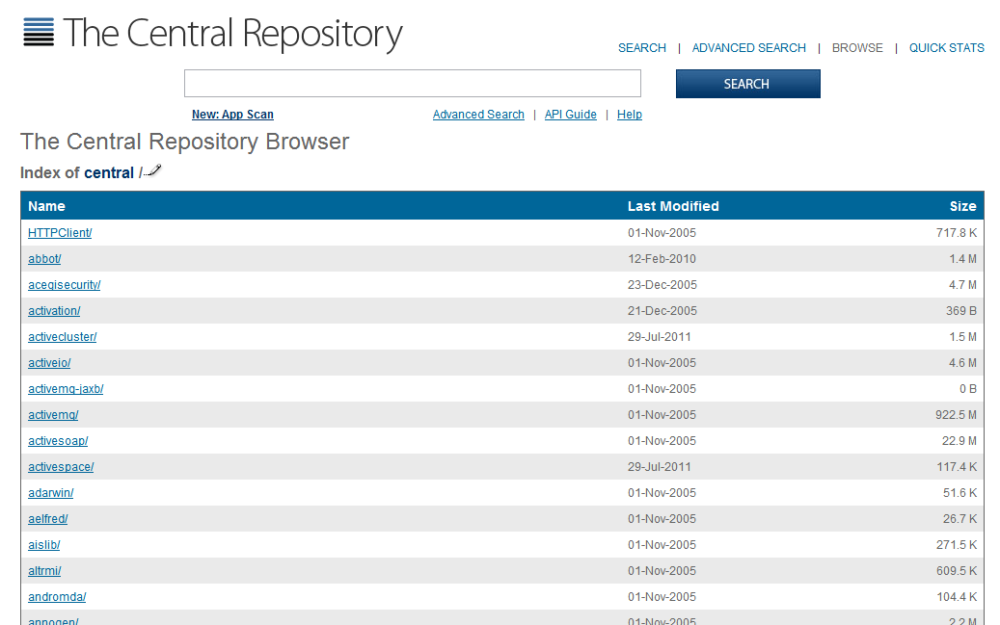
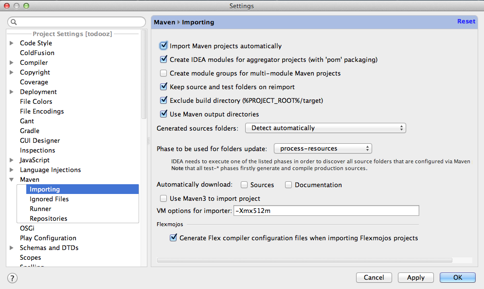
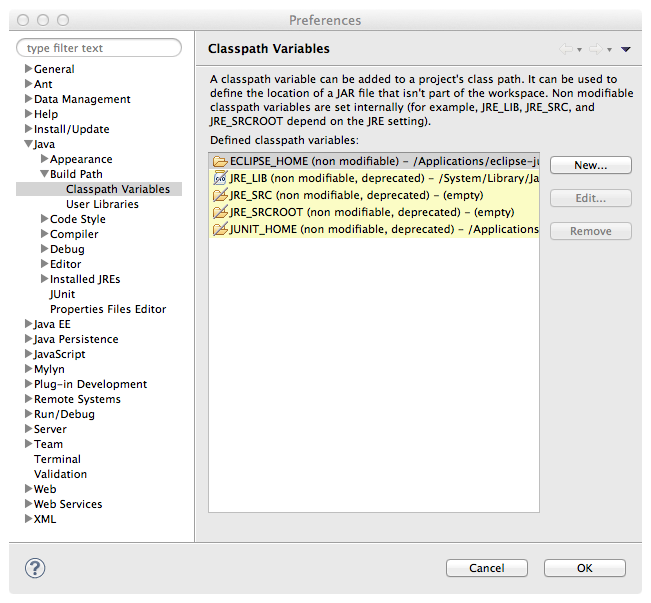

Maven est un outils de build : il transforme le code source en un produit logiciel.

Généralement le produit est une librairie java (.jar) ou une application web (.war).
En ligne de commande, le build est facilement automatisable, le produit peut être numéroté (ex : build-1.1.3.zip) et archivé.
Idéalement, le build éxécute les tests et produit des rapports.
Pour construire le produit, on a besoin de librairies : les dépendances.
Maven va les chercher dans des repositories.

La configuration du build est dans un fichier pom.xml (Project Object Model) à la racine du projet.
Les principales alternatives possibles en java sont
La dernière version de maven 3.x est disponible sur le site de maven.
Il faut télécharger et installer maven en local. Voici l'extrait de la documentation maven :
~ $ mvn --version Apache Maven 2.1.0 (r755702; 2009-03-18 20:10:27+0100) Java version: 1.6.0_20 Java home: /System/Library/Frameworks/JavaVM.framework/Versions/1.6.0/Home Default locale: fr_FR, platform encoding: MacRoman OS name: "mac os x" version: "10.6.4" arch: "x86_64" Family: "mac"
Nous allons maintenant créer un projet maven : le projet todooz.

A la racine du projet, on crée le fichier pom.xml
<project xmlns="http://maven.apache.org/POM/4.0.0" xmlns:xsi="http://www.w3.org/2001/XMLSchema-instance" xsi:schemaLocation="http://maven.apache.org/POM/4.0.0 http://maven.apache.org/maven-v4_0_0.xsd"> <modelVersion>4.0.0</modelVersion> <groupId>fr.todooz</groupId> <artifactId>todooz</artifactId> <packaging>jar</packaging> <version>1.0-SNAPSHOT</version> <name>todooz</name> <dependencies> </dependencies> </project>
Notre projet s'appelle donc todooz et nous avons choisi de le ranger dans le groupe fr.todooz.
Depuis la racine on ajoute les répertoires suivants :
pom.xml src |--main | |--java |--test | |--java
Cette structure respecte la convention de repertoires maven
On peut alors lancer le build.
todooz $ mvn package [INFO] Scanning for projects... [INFO] [INFO] ------------------------------------------------------------------------ [INFO] Building todooz 1.0-SNAPSHOT [INFO] ------------------------------------------------------------------------ [INFO] [INFO] --- maven-resources-plugin:2.4.3:resources (default-resources) @ todooz --- [WARNING] Using platform encoding (UTF-8 actually) to copy filtered resources, i.e. build is platform dependent! [INFO] skip non existing resourceDirectory /Users/dbourdette/projects/todooz/src/main/resources [INFO] [INFO] --- maven-compiler-plugin:2.3.2:compile (default-compile) @ todooz --- [INFO] Nothing to compile - all classes are up to date [INFO] [INFO] --- maven-resources-plugin:2.4.3:testResources (default-testResources) @ todooz --- [WARNING] Using platform encoding (UTF-8 actually) to copy filtered resources, i.e. build is platform dependent! [INFO] skip non existing resourceDirectory /Users/dbourdette/projects/todooz/src/test/resources [INFO] [INFO] --- maven-compiler-plugin:2.3.2:testCompile (default-testCompile) @ todooz --- [INFO] Nothing to compile - all classes are up to date [INFO] [INFO] --- maven-surefire-plugin:2.7.2:test (default-test) @ todooz --- [INFO] No tests to run. [INFO] Surefire report directory: /Users/dbourdette/projects/todooz/target/surefire-reports ------------------------------------------------------- T E S T S ------------------------------------------------------- There are no tests to run. Results : Tests run: 0, Failures: 0, Errors: 0, Skipped: 0 [INFO] [INFO] --- maven-jar-plugin:2.3.1:jar (default-jar) @ todooz --- [WARNING] JAR will be empty - no content was marked for inclusion! [INFO] ------------------------------------------------------------------------ [INFO] BUILD SUCCESS [INFO] ------------------------------------------------------------------------ [INFO] Total time: 1.847s [INFO] Finished at: Fri Aug 23 21:39:52 CEST 2013 [INFO] Final Memory: 9M/126M [INFO] ------------------------------------------------------------------------
Le build passe et produit le jar target/todooz-1.0-SNAPSHOT.jar.
Comme nous l'indique le log, le jar est presque vide car nous n'avons pas de fichier .java
todooz $ jar tf target/todooz-1.0-SNAPSHOT.jar META-INF/ META-INF/MANIFEST.MF META-INF/maven/ META-INF/maven/fr.todooz/ META-INF/maven/fr.todooz/todooz/ META-INF/maven/fr.todooz/todooz/pom.xml META-INF/maven/fr.todooz/todooz/pom.properties
Lors du build, maven nous indique que notre build est dépendant de l'encoding de notre machine.
[WARNING] Using platform encoding (MacRoman actually) to copy filtered resources, i.e. build is platform dependent!
Afin de corriger ce point, il faut indiquer à maven l'encoding du projet.
<project>
...
<properties>
<project.build.sourceEncoding>UTF-8</project.build.sourceEncoding>
</properties>
<dependencies>
</dependencies>
</project>
Il convient aussi d'indiquer à maven quel version utiliser pour la compilation des sources java.
<project>
...
<properties>
<project.build.sourceEncoding>UTF-8</project.build.sourceEncoding>
</properties>
<build>
<plugins>
<plugin>
<groupId>org.apache.maven.plugins</groupId>
<artifactId>maven-compiler-plugin</artifactId>
<version>3.1</version>
<configuration>
<source>1.7</source>
<target>1.7</target>
</configuration>
</plugin>
</plugins>
</build>
<dependencies>
</dependencies>
</project>
Nos sources seront donc compilées pour une version de java égale ou supérieure à 1.7.
mvn package est la commande de base qui construit tout le projet et génère le package produit.
Il est existe d'autres lifecycles, comme mvn clean ou mvn site.
A chaque fois que le build a besoin d'une librairie, maven la télécharge dans le repository local.
Il contient les librairies qui servent à l'application mais aussi les plugins de maven.
Par défaut il est dans le répertoire ~/.m2/repository.
Par défaut, maven télécharge ses librairies à partir du repository central http://repo1.maven.org.

Pour des cas simples, les réglages par défaut sont suffisant.
En entreprise, il n'est pas rare d'avoir à ajouter des repositories distants
Cela se fait en éditant le fichier ~/.m2/settings.xml
Dans notre cas simple, nous n'utiliserons pas ce fichier.
Il suffit de faire un click droit sur le pom.xml et de choisir "Add as a Maven Project".
Intellij nous indique que l'on est passé en java 1.7 et nous demande de recharger le projet.
Les réperoires src/main/java et src/main/test sont indiquer respectivement comme répertoires de source et de test.
Dans les settings, on opte pour l'import automatique des modifications apportées au pom.xml

A partir de la, toute modification dans le pom.xml sera prise en compte automatiquement par intellij.
Cette commande permet de générer le projet eclipse
mvn eclipse:eclipse
On peut ensuite ouvrir simplement ce projet dans eclipse (File > New > Java Project en allant chercher le bon répertoire).
A chaque modification du pom, il faut également relancer la commande et rafraichir le projet.
En fait cette commande génère le .project
<?xml version="1.0" encoding="UTF-8"?>
<projectDescription>
<name>todooz</name>
<comment>NO_M2ECLIPSE_SUPPORT: Project files created with the maven-eclipse-plugin are not supported in M2Eclipse.</comment>
<projects/>
<buildSpec>
<buildCommand>
<name>org.eclipse.jdt.core.javabuilder</name>
</buildCommand>
</buildSpec>
<natures>
<nature>org.eclipse.jdt.core.javanature</nature>
</natures>
</projectDescription>
et le .classpath
<?xml version="1.0" encoding="UTF-8"?>
<classpath>
<classpathentry kind="src" path="src/main/java" including="**/*.java"/>
<classpathentry kind="output" path="target/classes"/>
<classpathentry kind="con" path="org.eclipse.jdt.launching.JRE_CONTAINER"/>
</classpath>
Eclipse obtient donc la connaissance des répertoires et librairies gérées par maven.
Dans le .classpath, eclipse à des références vers des librairies dans le répertoire M2_REPO.
Maven évite les chemin absolus en dur lors de la production du .classpath pour eclipse.
Il reste donc a configurer eclipse dans Eclipse > Préférence > Classpath Variables.

On ajoute l'entrée M2_REPO qui pointe vers le répertoire .m2/repository dans le home.
Enfin on autorise eclipse a faire un rebuild du project suite à la modification du classpath.